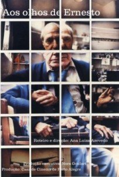

AOS OLHOS DE ERNESTO contemplado no edital do BNDES
O novo projeto de longa-metragem da diretora Ana Luiza Azevedo, da Casa de Cinema de Porto Alegre, AOS OLHOS DE ERNESTO, foi um dos 16 filmes selecionados pelo edital do BNDES 2014, cujos resultados foram divulgados nesta segunda-feira 9 de junho.
Abaixo, o texto publicado no sítio do BNDES, com o resultado completo da premiação.
**********
BNDES DEFINE PRODUÇÕES QUE SERÃO APOIADAS POR SEU EDITAL DE CINEMA
09/06/2014
Os 16 filmes brasileiros selecionados receberão apoio total de R$ 14 milhões
O Banco Nacional de Desenvolvimento Econômico e Social (BNDES) definiu os 16 projetos a serem apoiados pela versão mais recente do seu Edital de Cinema. Serão destinados, no total, R$ 14 milhões para produção de 14 novos filmes - seis ficções, seis documentários e duas animações - e finalização de outros dois.
Na categoria Animação, foram selecionados os projetos Lino, de Walbercy Ribas (Start Desenhos), e Bob Cuspe, de César Cabral (Coala Filmes), que receberão apoio de R$ 1,5 milhão cada.
Na categoria Ficção Grupo 1, que também apoia cada projeto com R$ 1,5 milhão e prioriza filmes que busquem resultados econômicos, sem prejuízo da qualidade artística e técnica, foram selecionados Juízo Final, de Andrucha Waddington (Conspiração), e Qualquer Gato Vira Lata 2, de Tomás Portella (Tietê Produções).
No Grupo 2 da categoria Ficção, voltada a produções que enfatizem a busca de reconhecimento artístico e técnico no mercado internacional, os selecionados, que receberão R$ 1 milhão cada, foram: Objetos Perdidos ou a História das Duas Únicas Pessoas do Planeta Terra, de Luiz Fernando Carvalho (Academia de Filmes); Piedade, de Cláudio Assis (República Pureza Filmes); Aquarius, de Kleber Mendonça Filho (Cinemascópio Produções); e Aos Olhos de Ernesto, de Ana Luiza Azevedo (Casa de Cinema de Porto Alegre).
Na categoria Documentário, foram selecionados os seguintes projetos: Há Muitas Noites na Noite, de Sílvio Tendler (Caliban Produções); Raízes de Aninha, de Márcio Cavalcanti (Asacine); 9 Passos Para Destruição de Bernadet, de Cláudia Priscila (Paleoteve); Pitanga, de Beto Brant (Drama Filmes); Meu Amigo Fela, de Joel Zito (Casa de Criação); e Fluxos - Da Praieira ao Mar Sem Fim, de Marcelo Luna (D7 Filmes). Cada uma dessas produções será apoiada com R$ 500 mil.
Por fim, os dois projetos de Finalização selecionados para apoio de R$ 500 mil cada foram Tim Maia, da produtora RT Comércio e Serviços de Criação e Produção, e Toquei Todas as Suas Coisas, da Primo Filmes Ltda.
O Edital de Cinema é a mais antiga ferramenta de apoio do BNDES ao setor audiovisual. Desde que foi lançado, em 1995, já apoiou a produção ou finalização de 384 filmes nacionais, com um valor total de R$ 159 milhões. A expectativa do BNDES é lançar uma nova edição do concurso ainda este ano.
Cadeia produtiva - O apoio do Banco ao setor audiovisual se completa com uma série de instrumentos financeiros reembolsáveis e não reembolsáveis, de renda fixa e variável. Tal apoio atinge todos os elos da cadeia produtiva, contemplando desde a produção de filmes até planos de negócios de produtoras, construção e digitalização de salas de cinema e patrocínio a festivais em todo o País.
O Programa BNDES para Desenvolvimento da Economia da Cultura (BNDES Procult) e o Fundo Setorial do Audiovisual (FSA) - do qual o BNDES é um dos agentes financeiros - investiram, juntos, R$ 293 milhões no setor desde 2007.
O BNDES também já investiu R$ 39 milhões nos Fundos de Financiamento da Indústria Cinematográfica Nacional, os Funcines. Regulamentados pela Comissão de Valores Mobiliários (CVM), tais fundos de participação foram criados para atrair novos investidores à cadeia produtiva audiovisual, de modo a capitalizar as empresas e melhorar sua profissionalização e governança.
Confira a relação completa dos projetos selecionados:
- Categoria Animação - R$ 1,5 milhão por projeto
1. Lino (Dir. Walbercy Ribas) - Start Desenhos (SP)
2. Bob Cuspe (Dir. César Cabral) - Coala Filmes (SP)
- Categoria Ficção Grupo 1 - R$ 1,5 milhão por projeto
1. Juízo Final (Dir. Andrucha Waddington) - Conspiração (RJ)
2. Qualquer Gato Vira Lata 2 (Dir. Tomás Portella) - Tietê Produções (RJ)
- Categoria Ficção Grupo 2 - R$ 1 milhão por projeto
1. Objetos Perdidos ou a Historia das Duas Únicas Pessoas do Planeta Terra (Dir. Luiz Fernando de Carvalho) - Academia de Filmes (SP)
2. Piedade (Dir. Claudio de Assis Ferreira) - Republica Pureza Filmes (RJ)
3. Aquarius (Dir. Kleber Mendonça Filho) - Cinemascópio Produções (PE)
4. Aos Olhos de Ernesto (Dir. Ana Luiza Azevedo) - Casa de Cinema de Porto Alegre (RS)
- Categoria Documentário 1 - R$ 500 mil por projeto
1. Há Muitas Noites na Noite (Dir. Sílvio Tendler) - Caliban Produções (RJ)
2. Raízes de Aninha (Dir. Márcio Cavalcanti) - Asacine (DF)
3. 9 Passos Para Destruição de Bernadet (Dir. Cláudia Priscila) - Paleoteve (SP)
4. Pitanga (Dir. Beto Brant) - Drama Filmes (SP)
5. Meu Amigo Fela (Dir. Joel Zito) - Casa de Criação (RJ)
6. Fluxos - Da Praieira do Mar Sem Fim (Dir. Marcelo Luna) - D7 Filmes (PE)
- Categoria Finalização - R$ 500 mil por projeto
1. Tim Maia - RT Comércio e Serviços de Criação e Produção
2. Toquei Todas As Suas Coisas - Primo Filmes Ltda.